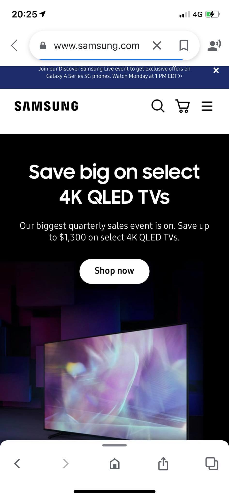
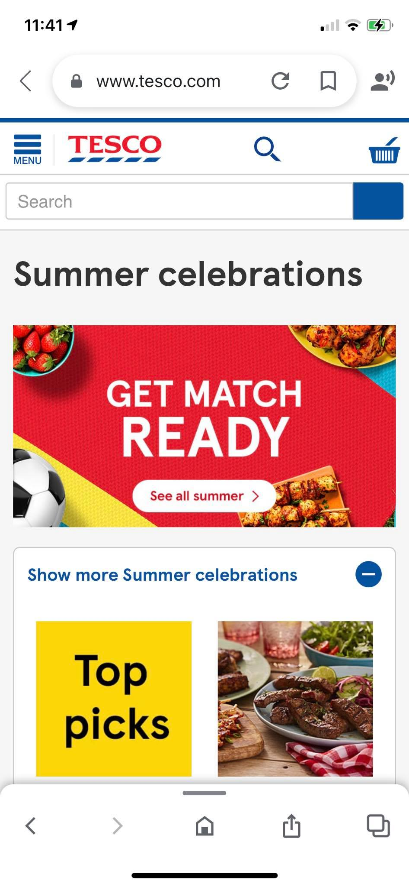
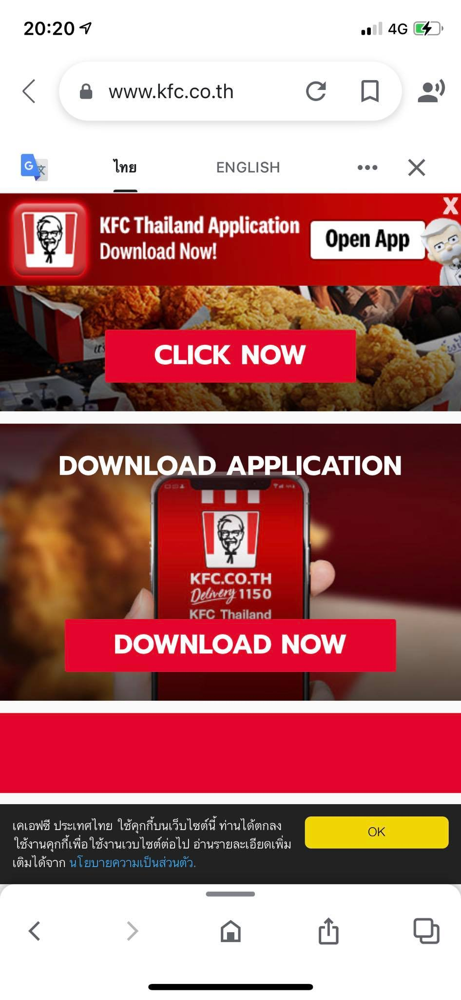

Contrast
Samsung
The samsung company designing have meanings indicator.Using royal blue with the logo dark grey inspires the desir of the audience to consum the prodcut The composition of the different colors creat an oustanding design towards the fun and the customers.Using the principles of contrast left user to fall enjoying its stylish quality magnificient with landscapes. This contrast color motivates the clients to consume their production
Proximity
Tesco

The website home page of tesco offer a large section way to figure out what the user need on time . At the top of header you will find the easy way how to manipulate and search for the item and information including the map .The company uses the priciples of proximity because the elements hang out to each other .the elements spaced apart are perceived as belonging to separate groups.We could see the squares in the buttom.Using the principles of proximity emphasize their relationship of the visual
Alignment
kfc
The company KFC uses the priciples of aligment visual which help its consumer to navigate properly while they set the order.Each box shows the item to be chosen. Alignment has got an important parts of design principles. Using this rules will inspire the audiences and will always keep their attention .